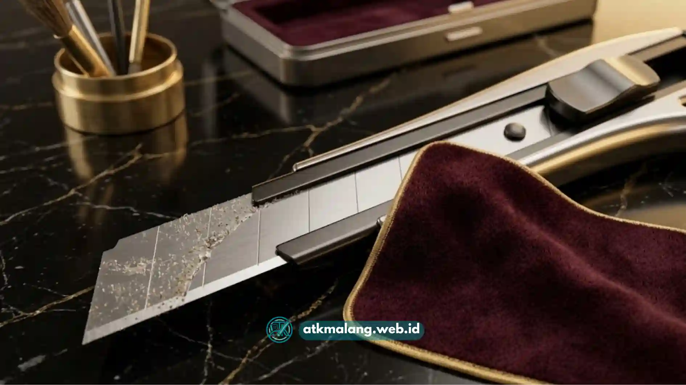

Tips merawat cutter kantor agar awet meliputi mengganti mata pisau secara berkala, menyimpan cutter di tempat kering, mengunci mata pisau setelah digunakan, dan menghindari pemotongan bahan yang tidak sesuai kapasitas cutter.
- Ganti mata pisau saat pemotongan mulai terasa berat.
- Simpan cutter di tempat kering agar tidak mudah berkarat.
- Selalu kunci mata pisau setelah selesai digunakan.
- Hindari memotong bahan yang melebihi kapasitas cutter.
- Bersihkan sisa lem atau kertas yang menempel pada mata pisau.
Perawatan cutter kantor yang tepat tidak hanya membuat alat lebih awet, tetapi juga menjaga keselamatan penggunanya saat bekerja.
Artikel ini membahas langkah-langkah praktis merawat cutter kantor agar tetap tajam dan aman digunakan dalam jangka panjang di lingkungan kantor Anda.
Daftar Isi
Bagaimana Cara Mengetahui Mata Pisau Cutter Sudah Perlu Diganti?
Cara mengetahui mata pisau cutter sudah perlu diganti adalah dengan memperhatikan apakah pemotongan mulai terasa berat, hasil potongan tidak rapi, atau muncul bekas robekan pada kertas.
Mata pisau yang tumpul membuat pengguna cenderung menekan cutter lebih keras dari biasanya agar bahan dapat terpotong.
Kondisi ini sebenarnya lebih berisiko dibandingkan mata pisau tajam, karena tekanan berlebih dapat menyebabkan cutter tergelincir dan melukai tangan pengguna.
Bagaimana Cara Menyimpan Cutter Kantor dengan Aman?
Cara menyimpan cutter kantor dengan aman adalah dengan mengunci mata pisau terlebih dahulu, lalu menyimpannya di laci atau wadah khusus Alat Tulis Kantor yang kering dan jauh dari jangkauan yang tidak perlu.
Penyimpanan yang sembarangan, seperti membiarkan cutter tergeletak di atas meja dengan mata pisau masih terbuka, meningkatkan risiko cedera bagi siapa pun yang tidak sengaja menyentuhnya.
Wadah atau laci khusus juga membantu menjaga cutter dari debu dan kelembapan yang dapat mempercepat karat pada mata pisau.

Membersihkan cutter dari sisa perekat memastikan pisau dapat digeser dengan lancar.Apakah Cutter Perlu Dibersihkan Secara Rutin?
Cutter perlu dibersihkan secara rutin, terutama pada bagian mata pisau, untuk menghilangkan sisa lem, serpihan kertas, atau debu yang dapat memengaruhi ketajaman dan kelancaran mekanisme cutter.
Sisa lem dari selotip atau label yang menempel pada mata pisau dapat membuat gerakan pisau menjadi kurang lancar, bahkan mempercepat proses ketumpulan.
Membersihkannya secara rutin dengan kain kering dapat membantu menjaga performa cutter tetap optimal setiap saat.
Bagaimana Cara Memperpanjang Usia Pakai Mata Pisau Cutter?
Cara memperpanjang usia pakai mata pisau cutter adalah dengan menggunakan cutter sesuai kapasitasnya, menghindari pemotongan pada permukaan keras seperti logam, dan selalu memotong di atas alas yang sesuai.
Memotong di atas permukaan yang terlalu keras, seperti meja kaca atau logam, dapat mempercepat ketumpulan mata pisau karena gesekan yang tidak semestinya.
Menggunakan alas potong khusus atau permukaan kayu dapat membantu menjaga ketajaman mata pisau lebih lama dan menghindari kerusakan alat ukur Anda.
Apa Risiko Menggunakan Cutter dengan Mata Pisau yang Sudah Tumpul?
Risiko menggunakan cutter dengan mata pisau yang sudah tumpul adalah meningkatnya kemungkinan cutter tergelincir saat digunakan, karena dibutuhkan tekanan lebih besar untuk memotong bahan yang sama.
Selain risiko cedera, mata pisau tumpul juga membuat hasil pemotongan menjadi kurang rapi, yang dapat memengaruhi kualitas pekerjaan, terutama untuk keperluan seperti memotong dokumen atau kemasan produk.
Merawat cutter kantor dengan baik, mulai dari mengganti mata pisau tepat waktu, menyimpan di tempat yang aman, hingga membersihkannya secara rutin, dapat memperpanjang usia pakai cutter sekaligus menjaga keselamatan penggunanya. Kebiasaan sederhana ini layak diterapkan di lingkungan kerja mana pun agar aktivitas memotong sehari-hari tetap lancar dan aman.